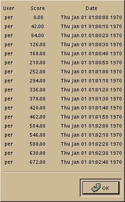

This is a high-scores dialog box. The GNOME libraries also handle loading/saving systemwide high scores in a secure way.
Gnome.Scores( 17, ({ "per" })*17, map((array(float))indices(allocate(17)),`*,42), map(indices(allocate(17)), `*, 10 ), 1 ) 
Gnome.Scores( 17, ({ "per" })*17, map((array(float))indices(allocate(17)),`*,42), map(indices(allocate(17)), `*, 10 ), 1 )
inherit Gnome.Dialog : Dialog
 Gnome.PropertyBox()->set_state()
Gnome.PropertyBox()->set_state()